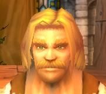
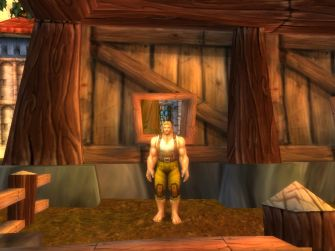
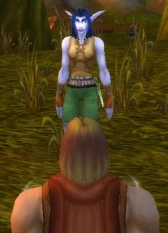

Joué par :
Garel Joué par :
[ Information masquée ] Age : 22
Signe de naissance : ours
Sexe : Homme
Race : Humain
Faction : Alliance
Formation : Guerrier
Niveau : 21
Guilde : Informations hrp : Je laisse les anciennes indications, qui me servaient de fil conducteur pour ce personnage, à la fin de ces nouvelles lignes. Averell est maintenant embarqué malgré lui (et de bon gré par moi) dans une conflit pour sont corps et sont âme quil naurait jamais imaginé (moi si, ha ha ha) ce dernier ma été inspiré en parti, par un autre de mes personnages qui se trouve dans une autre dimension, plus connut sous le nom dautre serveur et de la sanssaint de blizzard qui à pointé sont nez au bon moment. Voila la situation actuel malheureusement jai pris du retard dans mais récit. De plus je suis en train de reprendre mes anciens textes pour les corriger.
//Ni un héros, Ni un grand méchant cherchant à dominer le monde. Seulement un homme un peut perdu, qui laisse un peut trop souvent les événements décidés à sa place//
Description : Après avoir vécue une enfance réfugier dans ses rêves, afin déchappé le plus possible à ce qui ce passé dans le monde. Il fut jeté dehors par son père, qui en avait marre dattendre quil se décide à reprendre lentreprise familiale de construction. Ne sachant pas quoi faire il errât pendant quelque temps avant de se retrouvé presque sans un sous ce qui le poussa à parti au Northshire (au comté du nord) là ou une affiche, quil avait lu, prétendait que lon avait besoin de bras.
Troisième Ère [13]
Lune de la Force [4]
Décade du Panda
Décade du Gorille
Décade de l'Ours [4]
Souvenir dun début
Averell se réveilla. Sa tête le faisait souffrir. Passant sa main dans ses cheveux, il saperçu que sa tête était pansé. Quand une douce voix linterrompit « ni touché pas la plaie est encore fragile. ». Il ouvrit les yeux pour voir doù venait cette voix si apaisante mais. Il lui fallut plusieurs minutes pour que sa vue devienne à nouveau nette. Cest alors quil vit une jeune femme, aux cheveux blonds, penché au-dessus de lui. Elle vérifié son bandage.
«
- Il vous faudra encore plusieurs jours de repos avant de pouvoir repartir.
- Où suis-je ? Qui êtes vous ?
- Vous êtes à lauberge de la fierté du lion dans le Goldshire (le comté dor) et je suis médecin, hier vous vous êtes écroulé dans lauberge, la tête en sang. Est-ce que vous vous souvenez de quelque chose ?
»
Il fit un effort pour se souvenir mais il avait trop mal à la tête.
«
- Je ne sais pas, jai mal.
- Buvait cela, ça vous soulagera.
»
Averell avala comme il pu le récipient quelle lui tendait. Puis après quelque seconde il sombra doucement dans un sommeil sans rêve.
Il se réveilla de nouveau, dans une obscurité presque total. Ce dois être la nuit ce dit il. Une fois que ses yeux furent habitués à la pénombre, il observa autour de lui. La chambre était vide, avec pour seule lumière celle pénétrant part le jeu de la porte. Et qui avec les bruits étouffés par les murs et la porte, des aventuriers ripaillant et racontant leurs aventures aux badauds dans la salle du dessous, transformait la pièce en un repaire de spectre. Sasseyant il tenta de se rappelé les événements qui lavait conduit ici.
Une mine, des kobolds, une elfe. Il grogna, tout était flou et rien ne ramenait à cette auberge. Ce calment il ferma les yeux et remonta encore plus loin dans ses souvenir.
 Sétait le 4ème jour de la Décade de l'Ours pendant la Lune de la Force. Il sétait réveillé dans lécurie de labbaye du Northshire (du comté du nord) où il était arrivé la veille. Ses bottes avaient disparu, on avait du les lui voler pendant la nuit. Et malgré ses recherches il ne les avait pas retrouvé. Lhomme de la veille était toujours la à attendre. Sil était le voleur il ny en avait nul trace. Résigner il était allé voir celui qui répondait au nom de Willem, car il prétendait savoir où lui trouver du travail. Ce quil fit en lenvoyant voir dautres personnes, ayant besoin daide.
Et sétait pendant lune de ces différentes taches quil avait rencontré cette elfe,
 celle de ses souvenirs. Sa mémoire commençait à recoller les morceaux même sil ne se souvenait toujours pas du nom de cette dernière ou de comment il avait finit ici. Confient il reprit sont travaille remémoration.
La première fois quil lavait vue, il était en train de rosser des kobolds lorsque des flèches étaient venues achevés tous ceux quil navait pas mit Ko. Il se souvenait à présent avoir était ébahi par la précision de ces tirs et troublé par le bleu de sa peau. Car même si il avait déjà vue des elfes par le passé, sétait la première fois quil voyait une elfe de la nuit. Quant à elle, elle lavait pris en pitié de le voir pied nu et lui avait donné une paire de botte, avant de repartir vers labbaye. Lui avait continué à faire ce quon lui avait demandé en échange de quelque récompense. Et ils sétaient revus, quelques heures après. Seulement il avait changé, il avait une arme cette fois si. Oui, il sen souvenait maintenant. Willem la lui avait donné en récompense pour services rendus à la milice du Nothshire (du comté du nord). Lors de cette seconde rencontre ils avaient beaucoup parlé, des raisons qui faisaient quelle ce trouvait ici,
et de la discussion qui en avait découlé. Il se demanda, avant de reprendre le court de ses souvenirs, si la haine quelle éprouvée à lencontre de linquisition, malgré sa sagesse apparente, ne la faisait pas sous-estimer la menace que peut représenter les démonistes. Il se souvenait à présent du voyage quils avaient entreprit pour ce rendre au Goldshire (au comté dor) et de lauberge ou ils sétaient reposé avant de partir pour une mine quelle devait exploré. Par contre dans la mine, il ne ce souvenait de presque rien. Que sétait il passé là-bas ? Ou était cette fameuse elfe qui laccompagné. Il avait beau réfléchir il narrivait plus à reconstituer le pulse de ses souvenir. Alors frustré il se recoucha avec le maigre espoir que sont sommeil laiderait.
La visite médicale
Le soleil semblait déjà haut, Averell ouvrit la fenêtre, puis se tourna vers son médecin.
"
- voila un moment que vous me posait des questions et je ne sais même pas votre nom.
- Si je vous pose tant de question ces pour décelé des séquelles éventuels.
- Oui vous mavait déjà expliqué tout cela, mais
- Reprenons si vous le voulez bien ! Que cest il passé après que vous soyez parti de lauberge ?
"
Linterrompit elle en lui tendant une chaise.
"
- Ces a ce moment que mais souvenir devienne de plus en plus flou. Je sait que
- Assied vous idiot, sinon comment voulez vous que je regarde cette plaie !
- Heu oui, excusé moi.
- alors continué !
- oui, heu... Ha oui je sait que nous avons AYE atteint la mine mais tout le reste est noir. Le vide complet.
- Vous ne vous souvenez vraiment de rien après cela ?
- De rien, vous pensez que ces graves ?
- Non, cela est fréquent, chez les gens qui on subit un grave choque à la tête, de perdre une partie de la mémoire récente. Je dirais même que vous avez de la chance, car souvent ils oubli la journée entière et non les quelques heures ou minutes qui on précédé laccident.
- Alors pourquoi me posé vous toute ces question ?
- Pour massurer que vous vous rétablissez bien. Dailleurs ça me fait pensé que jai discuté avec laubergiste, et il ma dit que vous êtes arrivé avec une elfe qui et reparti juste après. Et que ces seulement après quelque minute que vous vous êtes effondrait au sol.
- Alors elle doit savoir se qui sait passé.
- Oui mais vous ne connaissez pas sont nom. Comment allez vous vous y prendre pour la retrouver ?
- Je ne sait pas, mais sest pour ça que jaimerais connaître votre nom. Pour ne pas me retrouver dans la même situation si le cas se présente.
"
Elle soupira légèrement avant de répondre. " Je mappelle Michelle. "
Une fin de travail mouvementé
Enfin il serait bientôt libre ! Cela faisait déjà trois jours quil travaillait pour payer ses dettes.
Et oui, même si Michelle ma belle, sont des mots qui vont très bien ensemble, il lui avait bien fallut payer les bandages et les potion prodiguait pour le sauver et ceci fait il navait plus eu assez dargent pour payer laubergiste.
Sest donc pour cette raison quil assisté laubergiste depuis trois jours, tout en dormant dans la cave affin de ne plus occupé une chambre quil pouvait se payer
Le premier jour il avait dû ranger les chambres, faire la plonge et ranger les tonneaux quon venait de livrer à lauberge. Mais ces deux derniers jours il lui avait fallu, en plus de la plonge et du ménage dans les chambres, débarrassé les tables et servir les clients. Ce qui pour cette dernière tache nétait pas une parti de plaisir, les aventuriers pour la plupart très pressait ne prenaient pas la peine de boire un verre et les habitués préférés faire affaire avec laubergiste plutôt quavec un petit nouveau. Mais il y avait de rares moment ou aimait faire se travail comme la fois ou un elfe lui avait donné des bougies pour la qualité de sont accueille et du service.
«
- Averell elle est ou largent pour le vin que tu vient de vendre ?
- Euh
»
Sortant de sa rêverie Averell écarquilla les yeux et laissa pendre sa mâchoire. Que la lumière le garde, il avait oublié de faire payer le client. Laubergiste en voyant cette tête compris de suite.
«
- Sest pas vrai ! tu la fait exprès ou quoi ! le dernier jour avant la fin de ta dette. - Désolé patron.
- Pff, j taime bien, tu tapplique dans ton travail, mais je peut pas te gardé éternellement, surtout si tu fais des bourdes pareilles, et puis jai déjà une assistante et suffisamment demployés. Tu comprends il va falloir trouver une solution.
- Jai quà lui courir après pour lui demander de payer.
»
Laubergiste éclata de rire.
«
- Oui, dans cent ans tu lauras peut-être rattrapé. Allé oublie ça et prend une pause on en reparlera après.
»
Averell parti en cuisine en traînant les pieds, comment avait il pu être aussi négligeant. Et comment pouvait il se rachetait sans perde encore plusieurs journée. Il sassis en bas des marche de la cave et réfléchi. Quant Soudain, au bout de quelque minute, il eu une idée. Il se leva pris sont sac, traversa la taverne en courant et alla droit chez le marchant de la forge. Déballent tous son equipement, arme, armure et bouclier il dit.
«
- Pff combien pour pff le tous pff.
- Bah, faut vois la qualité.
- Vite sil vous plaît !
»
Mais déjà laubergiste déboulait dans la forge criant.
«
- Où tu vas gamin ! - Ola, il ta dérobé quelque chose Farley.
- Non, non, jai rien volé, je cherchais juste une solu
- Toi tais toi ! Alors, Farley, sest a toi tous sa ?
- Attend Andrew laisse le parlé, vas y je técoute Averell pourquoi test parti en courant.
- Je voulais pas parti je vous jure patron sest juste que jai trouvé une solution pour payer.
- Ah et comment ? en vendant tous ça.
- Oui sest tous se quil me reste.
- On va bien voir si ton idée et bonne, Andrew sa fait combien le tous.
»
Andrew regarda les pièces darmures les une après les autres avant de répondre.
«
- Bof, pas grand-chose, une ou deux pièces dargents au maximum.
- Jai aussi un peu dargent, grâce au pourboire de quelques clients.
- Fait voir.
»
Averell tendit sa bourse à Farley laubergiste, qui se mit a marmonné, comme a chaque fois quil faisait des calcules. Andrew qui ne comprenait pas tout fouilla dans son sac et donna la somme que représenté léquipement.
«
- et bas, tu ten sort bien avec sa tu peut me remboursé le vin et ce qui te restait a payer pour la chambre, mais par contre je ne te donnerais pas un sous pour ton travail. Sest à toi de choisir tu travail encore un ou deux jours ou on ce quitte maintenant, bon compte, bonne yeux.
»
Averell nhésitât pas longtemps et dit au revoir à Farley avant de partir pour Stormwind, sous les regards perplexes dAndrew.
PS : je remercie tous ceux qui on jouer le jeu, comme Sylvar, Blasius et tous les autres dont jai oublier le nom.
PS : limage ne représente pas lhomme a qui jai oublier de demandé de payer mais lelfe mentionné. Je préfère le dire pour pas quil y est de mauvaise compréhension.
Visite à Stormwind, et nouveau départ
Quelle nuit, il fallait absolument quil trouve une solution pour ce procurer de largents.
La veille : La journée touchait à sa fin lorsquil arrivas à Stromwind. Il resta un moment sur le pont à admirer les statuts gardienne de la fière capitale. On ne lui avait visiblement pas menti en lui en parlant lorsquil était encore au village. Il faut que jaille voir leur fameuse cathédrale ; ce dit il avant de reprendre sont chemin. A peine avait il pénétré dans la ville que déjà il pouvait apercevoir les trois flèches de celle-ci. Bien je naurais pas à la chercher ; ce dit il de nouveau. En chemin un homme, qui ventais la qualité de son vin, lui donnas un bon pour une bouteille de pinot, ne ce faisant pas prié il fit un détour pour aller la chercher, au moins il aurait de quoi boire ce soir. Arrivé devant la cathédrale il ne pu quapprouvé quelle était bien plus belle quil ne limaginé et que la qualité de louvrage navait dégal que celle des statuts.
Une autre chose le surpris doù il était les trois flèches semblaient de même taille alors que de loin celle du centre est beaucoup plus grande. En entrent il vit tout la dévotion des hommes qui la fréquenté, ce qui la dissuada de demandé lasile pour la nuit, de peur quon lui demande de prié ou de ce confessé à la lumière. Car bien quil reconnaisse sa possible existence, il refusé que des hommes puisse imposé leurs volontés sous prétexte quils en sont les guides. En sortant il vue que la nuit était tombé, il décidât donc de se trouver un coin pour passé la nuit. Quelle que minute plus tard il était installé derrière un amas de caisses, la faim le tenaillé, il navait rien mangé depuis midi. Soudain il distingua un très léger arôme qui émané des caisses, qui le protégé des passant. Malgré sont envi de ne point volé quelquun, il ne pu sempêchait douvrir lune des caisses. Il y découvrit des bananes. Après en avoir prélevait quelques une, il referma la caisse soigneusement et se fit un repas bananes pinot, avant de se coucher. Malheureusement sa nuit ne fut pas aussi tranquille quil lue souhaité, car toute les heures il fut réveille par les cloches de la cathédrale, de plus le sol était très dur et il finit par se payer un mal de dos.
Maintenant il avais fui la capital pour se réfugier dans la forêt on il se reposé tant bien que mal, contre un arbre. Et puis, après tous que pouvait on lui voler, apparat ses bottes ?
Plus tard dans la journée il se leva la faim le tenaillé, il navait pas mangé depuis la veille. Mais que manger quant on a pas un sou. Errant dans la forêt à la recherche de nourriture il couru après des lapin, ce fit courser par des loups avant de tomber sur un petit groupe de défias gardant un coffre. Il nhésita pas longtemps avant de se décider à les attaquer, après tous ces bandits sont une menace pour le royaume et il avait faim. Seulement a main nue il lui fallait jouer discret. Les attaquant un par un et toujours le plus éloigner en premier, il finit par arriver au coffre quil ouvrit a tout allure. Sans même prendre le temps de trier, il mit tous ce quils y avaient dedans, dans sont sac et partit en courant de peur que dautre défias arrive ou que ceux quil avait assommé se réveille. Arrivé à un lac il sarrêta est regarda sont butin, il y avait trois pommes quil commença à dévorer, un bouclier, quelque pièce de cuivre et une petit pierre verte. Avec tous cela je devrais pouvoir me payer de la nourriture pensât il. Ce dirigeant vers la route il se demanda ou aller pour acheter sa nourriture, Stormwind ou le Goldhire. Il navait toujours pas décidé quant il vit une boulangère ambulante, quil arrêta pour lui en acheter. Comptant rapidement largent en sa possession il saperçu quil ne pourrait pas se payer de pain frais.
Heureusement il restait à la boulangère du pain rassis de la veille, quelle lui proposa a un prix raisonnable. Il en prit quelques un et reparti au lac quil avait quitté un peu plus tôt, afin de trempé le pain pour le rendre moins dur. Une fois rassasier, il descendit la rivière qui partait du lac, afin de trouvé un refuge. Au bout dune dizaine de minute il finit par trouver celui-ci sous la forme dune garnison de larmé. Après être installé dans un recoin prés de lentrer, il se reposa tranquillement en oubliant tous ce quil avait vécu ces derniers jours.
Lune d'Agilité [2]
Décade du Tigre
Décade du Singe [2]
Arriver et départ à la marche de louest
Il sétait écoulé du temps sa nuit prés de la garnison du ruisseau de louest. Au matin il était parti le plus vide possible pour ne pas quon lui demande des comptes, si on le surprenais à dormir près de la garnison.
Ensuite il avait erré pendant une bonne partie de la journée avant de tomber sur une ferme. Après un moment dhésitation il avait finit par demander sil pouvait se rendre utile et on lui avait confié une tâche à faire. Celles-ci finit il était allé dans dautres fermes, il sétait même résolut à retourner au village du Goldshire, pour y chercher du boulot. Il ne se débrouillait pas trop mal, mais il avait eu un problème pour lune dentre elles. On lui demandé de tuer un kobold ce qui en soit une lui posé pas de problème mais ce dernier était dans la mine ou il avait eu sont accident, et malgré tous ses efforts il navait pus franchir le seuil de celle-ci. Une terrible engouasse le tenaillé dés quil sen approché. Mais un jour ; quil était tombé sur un homme dage mur avec lequel, ils sétaient entre aidé ; il osa y entrer, avec ce dernier à qui il avait demandé de laider encor un fois.
Mais plus il gagnait dargents plus les enseignements quil suivait lui coûtait cher, alors il avait continué à faire les boulot quon lui proposait, sans prendre très au sérieux les gens quil le considérait comme un mercenaire, car après tous il était presque.
Maintenant il ce trouvé à la marche de louest, plus précisément à la colline des sentinelles. Pendant tous le trajet pour venir ici il avait eu le cur lourd, et encor plus depuis quil était arrivé. On lui avait expliqué comment toute cette région était devenu la proie des défias, et cela le mettait mal dans sont assiette. Comment pouvait on laissé les gens de cette régions seul fasse à cette menace. Car même sil avait aperçu plusieurs aventuriers ici, cétait à larmé de soccuper tous cela.
Interrompant ses réflexions il regarda lhorizon, le soleil nallait pas tarder à se coucher. Il me faut un endroit pour dormir et je ne me sens pas le cur à dormir ici, pensât il. Soudain il entendit un cri percent et vit un griffons ce poser à une centaine de mètre de lui. Il avait déjà entendu parlé de ce mode de transport mais ne lavait jamais utilisé. Sapprochant il ce renseigna sur les prix. Formidable je peut me payer le voyage pour Stormwind, murmura til. Alors, nécoutant qua moitié les conseille du maîtres des griffons, il monta sur lun dentre eux, qui sélança si vite quil faillit tomber. Mort de peur, à cause de cela, Averell passât tout le voyage agrippé le plus fort possible à la bête, qui se vengea en arrivant, à la capitale, en lui donnant un grand coup de queue qui le fit basculer ver lavant. Une fois relevé Averell parti en direction de la sortie de Stormwind, en se jurant quil ne reprendrait pas de griffons de sitôt. Arrivé à la sortie il allât prés de larbre qui lavait accueilli le jour où il navait pus dormir dans la capitale et fit un bon feu pour se préparé un repas et faire fuir les loups. Une fois le ventre plein il se coucha un peut honteux davoir lui aussi abandonné les habitants de la marche de louest a leurs sorts.
A lorphelinat
Ces enfants sont si étonnants. Malgré tous ce quils ont subi, ils trouvent encor le goût de jouer. Averell les regardé pensif. Sil était venus ici sétait peut-être pour se faire pardonner sa fuite de la marche de louest, car sen était bien une. Soudain il se dit quil pourrait leur conter une histoire. Après tout il navait pas était la lors de la dernière journée des enfants il pouvait bien leur offrir un peu de temps aujourdhui. Alors il sinstalla au centre de la pièce et commenças à raconter une histoire. Au début les enfants écoutèrent lhistoire mais au bout de quelques minutes ils reprirent petit à petit leurs jeux.
Averell due se mettre à lévidence il nétait pas douer pour raconter les histoires. Mais cela ne le découragea pas et il continua à raconter lhistoire de sieur Gerilk, paladin de sont état. (Personnage inventé alors si il excite un joueur avec ce nom quil me prévienne par M.P.)
Quand soudain alors quil arrivé a un moment crucial de sont histoire il entendis des cries deffroi provenant de lextérieur. Inquiet il sortie et couru dans la direction de ces cries. Lorsquil arriva prés de la source des cries ceux si avaient disparu et il narriva pas trouver la personne qui les avait pousser, mais compris vite pourquoi on avait due crié. Car il se trouvait juste à coté de lhôpital, et il devait être en plein travail. Alors rassuré de savoir que ce nétait pas une attaque il reparti pour lorphelinat ou il espéré finir sont histoire avec un peu plus de publique que lorsquil lavait interrompu.
Lorsquil arriva à lorphelinat il remarqua une très jeune gnome, quil navait visiblement pas vue auparavant, et qui pleuré. Attristé par ce spectacle, et craignant que ce fut de sa faut, il lui demandant pourquoi elle pleuré. Ce quelle lui répondit navait rien dextraordinaire malheureusement. Elle avait perdu sont père et sa mère comme tous les autre enfant de la pièce, seulement elle ne semblait pas le supporté aussi bien que les autres. Cest à ce moment quelle ce rapprocha dAverell et lui demanda sil ne voulait pas ladopter. Tout dabord surpris par la question il devint vite apeuré par la tournure des événements. Alors refusant poliment la demande, il fit ses adieux à lassemblé tout en promettant à la gnomette quil reviendrait la voir.
Arrivé au niveau de la sortie de Stormwind il sarrêta et sassis à coté de la statue de Danath. Pourquoi avait il réagi comme cela ? Il nen avait aucun idée, mais cela commencé à devenir une habitude de fuir. Et il nen était pas fier. Je doit y retourné se dit til, en se levant pour allé à la banque. Après avoir fait la queue à la banque et sêtre changer, il était retourné jusque devant lorphelinat. Mais il nosé pas retourner à lintérieur, il narrivé pas à trouvé dexcuse pour revenir. Alors il sassit sur le banc situé en fasse de lorphelinat et réfléchit. Peut de temps après une elfe vient sasseoir à coter de lui, et entrepris la conversation.
Averell se prêta au jeu, en ce disant que ça ne pouvait que lui changeait les idées, puisquil narrivé toujours pas à trouvé dexcuse. Effectivement lorsque lelfe parti il se santé moins coupable, même sil ne sexcusé toujours pas sont geste. Car après tous il avait promit a cette enfant quil repasserait alors il le ferrait et cette fois la il parlerait plus longtemps avec elle. Plein de ses bonnes intentions il resta encor quelques minutes assis avant de partir pour ce trouver un endroit ou dormir.
Décade du Faucon
Lune de l'Esprit [7]
Décade de la Chouette [3]
Mauvaise journée au Loch Modan
La veille il avait finit par arriver au Loch Modan, pour livrer une arme à un soldat qui lui avait tout de suite donné dautre course à faire. La première était de se rendre dans une mine envahie par des kobolds pour y récupérer du matérielle. Rien qua la pensé de tous ces kobolds, Averell avait failli refusé cette tache, mais il voulait vaincre une bonne fois pour toute cette crainte que remonté à sont accident dans cette mine du Goldshire. Une fois arrivée devant la grotte il aperçus un nain tuant des kobolds ; préfèrent éviter les combat il resta un moment derrière un buisson à observé ce nain qui une fois sa victime achevé parti dans la direction opposé à la mine avant de disparaître. Averell savança alors et observa la situation. La voie menant à la mine été libre, il en profita pour y pénétré. Régulièrement il tombé sur des kobolds mort, ce quil apprécié mais cela lintrigué aussi car si le responsable de tous ces morts lattaqué lui aussi il ne ferait certainement pas le poids. Il finit par entendre le bruit de combat, alors il sapprocha encor plus doucement mais fut rassuré en voyant une elfe avec un tigre déchiquetait le kobold qui les attaqués. Une idée lui survient alors, si cette elfe continu à tuer les kobolds et que je me cache derrière, je pourrait reprendre le matérielle sans risque. Il se recula alors en direction de la sorti pour ne pas que lelfe le repère et attendit. Lelfe passa juste à coté de lui, sans lui prêté la moindre attention, avant de repartir dans une autre branche de la mine. Averell, qui nétait vraiment pas douer pour se cacher, se demandé se quil devait faire, quand un nain quil navait pas entendu arrivé le dépassa pour partir dans la direction de lelfe. Cette surprise réveilla sa peur et Averell couru rejoindre les deux aventurier avec lesquels il serait plus en sécurité. Sans mots dire les deux aventuriers progressés dans la mine en effectuant le vide complet et de façon très méthodique. Pendant ce temps Averell récupéré ce pour lequel il était venu tout en tentant de les aider. Il remarqua alors que le nain nétait autre que celui vue à lextérieur. Une fois quil eu finit de récupérer ce quon lui avait demandé il sapprêta à ressorti quand le nain lui demanda sil miner. Un peut surpris il lui répondit quil ny connaissait rien dans larts de la mine. Visiblement cette réponse lintrigué car tout en minant un gisement il lui demandât quel métier il faisait. Averell sachant que la réponse quil donnerait dérangerai le nain il hésita à lui répondre, mais se dernier insista alors il lui répondit que le seul métier quil exercé était celui de coursier. Visiblement le nain ne semblait pas considérer cela comme un métier car il continua la conversation en disant quil devrait prendre un travail, car sa lui rendrait service. Averell remercia le nain pour le conseille et commença à repartir, car lelfe ne sétait pas attardé de plus il craignait que des kobolds viennent de lextérieur et le prenne au piège dans cette mine. Il avait fait à peine quelque mètre quun kobold lui tombât dessus, visiblement il était trop tard les kobolds bloqué déjà lentré. Heureusement le nain, qui avait sans doute finit de miner, vint laidé et ensemble il se dirigèrent vert la sorti. Mais les kobolds arrivé toujours plus nombreux a peine il en avait tuer un quun autre prenait la relève et sest lorsquils arrivèrent enfin à tuer le dernier de la dernière vague quil vit le nain blessé en de nombreux endroit seffondrer sur le sol inconscient. Totalement affolé Averell tenta de le réveiller à grand coup de baffe mais le corps inanimé ne réagissait pas, alors il attrapa le nain et tenta de le transporter hors de la mine. Mais des kobolds le repérèrent et le prirent en chasse. Prit de panique il lachat le nain et prit ces jambe à sont coup jusquau poste dalgaz ou il prévint les gardes de la situation. Ces dernier lenvoyèrent se détendre sur une chaise, en lui expliquant que les kobold avait sans doute finit le travail et quil ny avait plus rien a faire. Terrassé par cette nouvelle il rendit le matérielle, récupéré dans la mine, sans grande conviction avant de saffalé sur une chaise.
Questionnement
Averell regardé sa choppe, un peut lasse et sans trop comprendre. Il avait passé la fin de journée dhier a ce consolé de la mort de cette aventurier quil navait pue sauver. Pourquoi sétait il mit dans un telle état, ce nétait pas la première fois quil voyait un mort, il avait même tué pour sauver sa vie. Enfin maintenant il était calme. Il pensé à la discussion quil avait eu avec le malheureux, prendre un métier, oui mais lequel ? Il ne sétait pas souvent pausé la question mais il savait que pour faire un bon artisan il lui fallait un local et il nen avait pas, ou alors pourquoi ne pas reprendre lentreprise familiale ? Non sétait trop tôt pour revenir. Alors que faire ? Ce levant il pris ces affaire, vérifias que la lettre de commande quon lui avait confier était la et parti. Après tous il trouverait bien un métier en chemin.
Début des cauchemars
Averell ce réveilla en hurlant. Dun bond il se releva et couru droit devant lui. Il ne devait pas sarrêter, il ne fallait pas quelle le rattrape, non en aucun cas il ne le fallait elle ne laurait pas. Soudain sa tête heurta un obstacle dur et froid quil navait pu distingué dans lobscurité et le flou de sa vision. Son corps inerte sécroula sur le sol. Sans quil le sache la Nature, par ce geste aussi brutal, venait de lui offrir le répit quil recherché dans cette course effréné.
Décade de la Baleine [1]
Le retour des cauchemars
Averell ouvrit les yeux, avant de les refermer aussi sec. Il se trouvé sur un cheval au galop. Ce nétait pas possible, puisquil ne savait pas monté et pourtant tous ses lui disait le contraire. Se forcent il rouvrit les yeux pour comprendre, ou tout du moins tenter darrêté ce cheval. Rien à faire la monture navait aucune bride et pire encore aucun de ses muscle ne répondait. Même quant il cria de panique rien ne ce passa et pour couronné le tous le paysage qui défilé sous ses yeux lui été inconnu. Alors de désespoir il ferma les yeux de nouveau et pria de toute ses force toutes les divinités qui lui passé par la tête.
Au bout dun long moment la monture stoppa, se qui le coupa dans ses prière et avant même quil est le temps dadresse ses remerciement pour ce miracle. Il eu laffreuse sensation quil descendait de la monture. Osant jeter un il, il vit alors devant le soleil couchant la tête de ce quil avait prit pour un cheval. Ses yeux et sont museau craché des flammes. A cette vue il ne pus sempêcher de pousser un cri, mais comme auparavant sa voit se sorti pas, à la place il entendit une voix féminine, bien que rocailleuse. Celle-ci parlait dans une langue inconnue, qui produisit chez Averell une très désagréable douleur comme si un vend aussi sec que glacial lui traversait les oreilles de part en part. dés quelle eu finit la monture démoniaque poussa un hennissement ressemble plus a une lamentation dagonie qua un vrai hennissement et disparue dans un nuage de flamme quune bourrasque dissipa la seconde suivante.
Il se tourna ensuite en direction dune étrange bâtisse, situé à une centaine de mètre et commença à en faire le tour. Se voire bouger tous seul le mettait de plus en plus mal à laise. Arrivé en vue de lentré il sarrêta. Il y avait un Orc assit prés dun feu, visiblement il sâpreté à manger. A cette vue Averell voulut partir mais il navait toujours aucun contrôle. Soudain il réentendit cette voie étrange qui provenait de sa bouche. Elle ne parlait toujours pas lhumain mais cette fois il comprenait : « LokTar fière membre de la horde, puis je me joindre à vous ? »
Surpris lOrc se retourna et regarda Averell droit dans les yeux, puis à la grande surprise de ce dernier, lui répondit : « LokTar aventurière, cela faisait longtemps que je navait vue quelquun, votre compagnie me ferait le plus grand plaisir. »
Tout en disant ses mots il sétait approché pour accueillir sont invitée surprise. Averell totalement dépassé ne réagissait plus, contrairement à sont corps qui, une fois lOrc assez prés, claqua dans ses doigt. Cela fit surgir du buisson derrière lui deux créatures démoniaques qui se jetèrent sur lOrc désarmé. La voix commença alors tranquillement une incantation dans la première langue quelle avait employée. Comme la première fois Averell souffrait, mais cela ne lempêcha pas de voir toute la scène.
A chaque mot séchappé de chaque orifices, devenant plus nombreux à chaque morsure, un rayon dénergie, qui se regroupant pour nen formé quun, sélançaient jusque dans une main qui nétait pas celle dAverell. Là dans un étrange scintillement ils ce cristallisaient petit à petit. Horrifié Averell était comme tétanisé. Lorsque les derniers rayons séchappèrent de lOrc accompagnant son dernier souffle, son corps inerte sécroula au sol sans jamais latteindre. À ça place une marre de sang et un nuage de poussière qui disparu, comme un feu dartifice, en un millier de petits éclats lumineux aux reflets roser. La voie siffla et les démons, abandonnant leur festin, retournèrent derrière leur maître. Alors ricanant elle regarda la pierre qui ce trouvé désormais dans sa main. Sest alors quAverell vit, dans lun des reflets de celle ci, sont vissage ou plutôt celui dune Orc atrocement défiguré, celui la même qui lavait
Tous était clair maintenant, il était toujours inconscient et le cauchemars, même sil avait changer, avait reprit et ne faisait que commencé.
Décade du Lapin [3]
Cauchemars suite
Cela faisait plusieurs jours que toutes ces horreurs défilées sous ses yeux, combien exactement il ne voulait pas le savoir ; implorant, comme à chaque fois quelle sapprêtait à sendormir, la fin de ce cauchemars et son réveille. Mais comme à chaque fois ce fut lobscurité qui laccueillit.
Et là il restait seul avec pour tout compagnon les souvenirs de touts ces êtres succombant aux attaque de sa geôlière. Pour la plupart impuissant et désarmé elle les avait traqué sans faire aucun distinction de sexe ou de race. Même des être comme les taurens et les ogres, aussi imposant soit il, avaient périt sous les attaques de ces démons. Averell quant à lui pleurait et hurlait, de dépit, à la vue de chaque combat mais sans jamais déranger ces scènes dont il nétait, en fin de compte, quun spectateur, Incapable du moindre geste. Mais dans lobscurité, il lui arrivé parfois de se réveiller pour reprendre sa vie. Arrivant même à se persuader que tout navait été que rêve, avant de finir inévitablement dans une immense clairière. Celle-ci était remplie de piliers, toujours plus nombreux à chaque fois, et de façon parfaitement agencé. Formant six spirals qui petit à petit se rapprocher du centre imaginaire dun cercle. Et à chaque visite il était inlassablement attiré par ce centre ou une fois en place il voyait touts les piliers silluminer de lintérieur laissant apparaître dans chacune deux lune des victimes, voir même pour les plus éloigné des personnes quil ne connaissait pas. Et là irrémédiablement elles ce mettaient toute à parlait en même temps.
« - Arrête la ! - lâche ! - sauve nous ! - ta place est ici, parmi nous ! - Tu peut larrêter, tu en la les moyens. - je suis ici à ta place, reprend la ! - Elle ne sait pas ou tu est, profites en. - Nous sommes tous la par ta faute ! - Libère nous » Mais quand ce brouhaha atteignait sont paroxysme il finissait par sortir de ce rêve pour retomber dans le cauchemar, ou cette démoniste sans âme se relevait pour reprendre la chasse.
Seulement cette fois si, en arrivant à la clairière il vit quil ne manquait plus quun pilier pour achever cet immense maelström de pierre. Et bizarrement il ne fut pas attiré par le centre comme auparavant, mais par un amas de roche situé à lautre bout, à frontière de la forêt. En si rendant, il fut surpris que cette partie de la clairière ce localise à lextérieur du cercle de ce tourbillon de pierre. Mais une plus grande surprise lattentait. Arrivé à cette amas il reconnu facilement un pilier brisé en mille morceau et dont la plus gros partie manqué. Comme il si attendait les restes lilluminèrent petit à petit et une fois tous allumé un vissage apparut. Cest là que sa surprise fut la plus forte. Si forte quil sécroula devant lamas lumineux, dont le vissage, derrière se miroir brisé, nétait autre que le sien. Se remettant difficilement de cette macabre vision il entendit sa propre voie lui dire : « sest ta dernière chance mon ptit. Mets y tous que tà. Sauve les, sauve toi. » Mais déjà sa voit nétait plus qun murmure « Et surtout retiens bien ça, notre saluts est dans ces C.... » Le cauchemar reprenait déjà et cette dernière phrase nétait pas claire.
Shorgas ce réveilla. Elle devait faire vite, il ne lui restait plus beaucoup de temps pour accomplir ça mission. Et le gibier ce faisait de plus en plus rare. Les rêveurs étaient de moins en moins attiré de lautre coté, certainement à cause de la diminution dinfluence des esprits frappeurs de la Sanssaint. Ils ne seraient sans doute plus capables de retenir toutes les entités protectrice dAzeroth bien longtemps. Une journée tout au plus. Assise en tailleur Shorgas ferma les paupières, tout en gardant ses yeux entrouverts, et ce concentra. Elle devait repérer une nouvelle proie au plus vide, car après il lui faudrait effectuer le rituel pour ouvrir la porte et celui-ci prenait du temps. Presque aussi tôt elle en senti une et celle-ci ne lui était pas inconnue. Cette dernière lui avait échappé le tout premier jour, en parvenant à retourner sur Azeroth, nul ne sait comment. Et depuis une dizaine de jour elle était revenue sans pour autant quelle parvienne à la localiser. Cet homme, qui avait paru si faible la première fois, la narguait et cela elle ne le supportait plus depuis longtemps. Mais hélasse elle avait déjà perdu trop de temps à le chercher et maintenant il ne lui était plus permit den perdre. Elle se concentra de nouveau, en tentant de loublier et continua de chercher. Au bout dun moment un léger rictus ce dessina sur son visage. Elle venait de trouver une nouvelle proie. Ce relevant elle émis un court sifflement puis commença un rituel, pendant que ces démon arrivaient à toute allure. Lorsquelle eu finit un arbre qui ce trouvait à quelque mètre s'enflamma instantanément des racines jusquà la cime. Et de cette colonne de feu surgit un palefroi corrompu au grand galop, qui sarrêta juste devant elle. Lenfourchant elle parti le plus vite possible sur les lieus de sont prochain combat, avec derrière elle sa meute infernal.
Plus le groupe approchait de leur futur victime et plus Averell reconnaissait le décor qui défiler devant elle. Et même si celui si ressemblait trait pour trait à la foret dElwynn, ce nétait pas elle. Ce lieu était trop froid, trop prévisible, même les décors de théâtre, quil arrivait que sont père construise, semblait plus vivant que cette endroit. Mais Averell ne sen préoccupé plus il pensait à cette phrase, « Et surtout retiens bien ça, autre talus est sang et ciseaux » quelle pouvait en être le sens. Elle ne voulait rien dire pour lui, mais peut être avait il mal comprit. Remplacent les mots pour formé des phrases cohérentes il cherchait ce quil avait pu se dire. « Notre malus est sans tes ciseaux » Non ça ne voulais toujours rien dire.
Mais déjà ils arrivaient, Shorgas descendit de sa monture et continua à pied. Traversant un village désert elle vit bientôt un silhouette ce dessiner dans le lointain. Préparer un piège lui prendrait trop de temps, alors elle continua te sapprocher bien décidait à lattaquer de front. Plus elle avançait et plus elle le distingué, sétait un homme à genou, il tenait une grande masse devant lui et portait une légère armure de métal. Certainement un paladin en apprentissage, comme ça va être drôle de le voir mourir en ce rendant compte que la lumière ne viendrait pas à son secoure, pensât elle.
« Notre saluts est dans ces ciseaux, pipeaux, vitraux. » la phrase semblait bonne, par rapport à ce quil avait dit avant. Mais ce dernier mot, le plus important, lui échapper encore.
Soudain un des démons marchât sur une branche et le paladin tourna la tête dans leur direction.
Suite à venir
Le Rituel
à venir
Questionnement
Assis contre un arbre Averell se reposait. Son esprit las de ce combat permanent, goûtait enfin au calme, heureux de cette victoire aussi inattendue quinespéré.
Malheureusement au bout de quelque minute le doute revient et avec lui les questions. Même si sont ennemie ainsi que lobscurité avaient fui dans le portail quelle avait ouverte. Est esse (Hrp : désoler je retrouve plus comment ça s'écrit au pire remplacé le par Est-ce que sétait) réellement une victoire ou un simple répit ? La surprise de son ennemie en voyant lépée de lange, que la lumière avait envoyé à sont secours, nétait pas de la crainte mais de la curiosité. Et pourquoi seulement à la vue de lépée et pas celle de lange ? Et cet ange pourquoi maintenant, alors quil nespérait plus une seule aide depuis longtemps ? Et cette litanie qui avait précédée sa venue était troublante, ne ressemblant à aucune ode à la lumière quil connaissait. Lange en était il seulement un ? Ou nétait il quun leurre pour lui faire baisser sa garde le temps que son ennemie prépare lun de ces plant perfide dont elle raffolé. Et
Averell sentait son crâne exploser sous les questions et ressentit le besoin urgent de courir le plus loin possible, pour fatiguer son corps et reposer son esprit, tant quil en avait le contrôle.
Loin de la, de lautre coté du portail qui ne ressemblait maintenant plus quà une petit faille la démoniste se posait elle aussi des questions. Pourquoi lépée dIshara était elle intervenu ? Elle avait brisé sa concentration, ce qui aurait dû fermer le portail définitivement. Et pourtant une brèche subsisté et en plus elle était stable. Décidément les imprévus se multiplié lempêchant à chaque fois de mené sa mission à bien mais toujours en lui apportant une solution pour y arrivé. La démoniste souffla les bougies disposé autours delle, avant dallé se coucher. Ces maîtres auraient sans doute une explication au comportement de lépée, après tous elle pouvait bien prendre le risque de leurs demander, La faille stabilisé elle était sûre darriver à ses fin.
Quatrième Ère [8]
Lune de la Force [1]
Décade du Panda [1]
Retour de l'ennemi
à venir
Décade du Gorille
Décade de l'Ours
Lune d'Agilité [7]
Décade du Tigre [2]
Détermination
Maintenant il savait ! Quoiquil arrive, il irait jusquau bout, jusquau dénouement final.
Il avait erré presque toute une lune au bord de la folie, habité par tous ces souvenirs qui ne lui appartenaient pas. Mais il avait résisté et maintenant il les acceptés. Mieux il arrivait à en décrypter certain, à les manipuler comme ses propres souvenir et il était bien déterminer à les utiliser contre elle, car il le savait elle reviendrait. Sans doute pas tout de suite mais un jour. Oui, elle reviendrait et il la détruirait.
Mais cette vengeance personnelle nétait quun détail, pour le nouveau Averell. Car, parmi tous ce quil avait vue lors de ses délires, il y avait des dangers plus grands encore. Des épées de Damoclès ne demandant quà tomber sur le monde, ses amis et sa famille. Et ces menaces, quil ne maîtrisé pas, il comptait bien les supprimer, une à une et sans exception. Même celle quil ignorait pour le moment. Même sil devait y passer sa vie. Il les détruirait. Mais pour le moment il lui fallait ce durcir saguerrir, autant mentalement que physiquement. Ce quil faisait toute en cherchant les informations quil lui permettrait de localiser ces menaces et de les frapper le moment venu. Tout était écrit dans sa tête et rien ne le ferait changer dobjectif.
Car maintenant il savait !
Une rumeur inattendue
Tandis quAverell repartait, après avoir récupéré un bouclier dans le quartier des nains, il entendit une rumeur. Un chevalier, ainsi que tout les occupants de sa demeure, avaient été sauvagement massacrés par sa femme disparue depuis presque une ère. Rien dintéressant pour ses projets et pourtant quelque chose lintrigué. Il narrivait pas à ce sortir cette nouvelle de la tête, pourquoi ? Pour en trouver la raison, il décida den apprendre plus sur cette affaire.
Plus tard, alors quil cherchait toujours les raisons de cette persistance dans son esprit. Il apprit que la femme venait de ce faire arrêter par les gardes de Stormwind. Mieux encore il apprit sont nom. Nausicaâ, il résonné dans sa tête, décodant de nouvelle bride de souvenir : « Porteuse épées démons Ishara ». Cette femme avait un rapport avec trois lames très dangereuses, quil avait déjà vu dans la mémoire de son ennemie.
Tout cela ressemblait fort à une occasion à ne pas rater, pour sa mission. Mais avant tout il lui fallait faire le tri dans ses nouveaux souvenirs, pour comprendre ! Comprendre le danger actuel que représenté cette personne et aussi celui quelle pourrait représenter plus tard. Et surtout le plus important pour trouver la faille qui détruirait cette menace, si elle si trouvait.
Décade du Singe [3]
Agir plutôt que laissé agir
Rien. Il navait rien trouvé pour détruire cette maudite arme. Et en faite cela navait rien détonnant, puisque les maîtres de sont ennemie, dont il connaissait le nom désormais et doù il tirait son savoir, navaient jamais cherché à le faire. Ni lintention de la faire dailleurs, pourquoi voudraient ils détruire lun des leurs.
Néanmoins ils nen restaient pas inactifs pour autant. Car lorsque Shorgas leurs avait parlé de lapparition de lépée. Ils étaient déjà au courant et lui avaient donné lordre de ne pas sen occuper.
Cependant la suite de ce souvenir lui avait apprit le peut que la démoniste savait ou supposait. Larme ne pouvait quitter sa porteuse, ce qui était un bon point, mais plus inquiétant dautres agents démoniaques oeuvreraient certainement, si ce nétaient pas déjà le cas, pour libérer lépée lorsquils le jugeraient nécessaire. Utilisant pour cela, toutes les informations fournies par leurs agents doubles, qui des leurs retour dans le néant distordu sempressaient de trahir leurs nouveaux maîtres, démonistes, au profit de leur seul et unique maître.
Averell regarda le courrier, rien. Aucune nouvelle de sont indique. Sétait bon signe mais il nétait pas rassuré pour autant. Sil sétait fait roulé et que son indique ne surveillait pas la prison. Enfin quoi quil en soit, il devait retourner à Stormwind. Cela faisait trop longtemps que lépée navait pas bougé et il fallait y remédier. Il ce devait dagir maintenant, car il lui avait fallut presque une décade pour décodé ce peut dinformation, se qui aurait pu laissé à dautres tout le temps dagir. Et les démons ne devaient pas être les seuls à courir après.
Aujourdhui, oui Aujourdhui il irait à la prison et quitte à devenir hors la loi, il récupérerait lépée et sa porteuse.
Le plan
Pendant le voyage, qui le ramenait à Stormwind, Averell réfléchissait. Comment pouvait il entrer et ressortir, avec la prisonnière, vivant. Seul il ne pouvait utiliser la force, il serait trop vite débordé. Alors comment faire ?
Soudain une boule de neige passa à ras de sa tête, pour sécraser contre un mur. Regardant autour de lui il vit des enfants joué avec un gnome tout de rouge vêtu. « Ces gnomes du voile dhiver sont de vrai gamin. » Soupira til, en reprenant son chemin. Mais trois pas plus loin il stoppa net. Et si sétait la solution. En se faisant passer pour un gnome du voile dhiver venant apporter du réconfort aux détenus, il pourrait peut être arriver à abaisser la vigilance des gardes et ainsi parvenir jusqu'à elle. Oui, cela pouvait marcher. Surtout quil avait entendu parler dune machine Gobelin permettant de se transformer en gnome du voile dhiver et même sil avait aussi peu confiance en leur technologie quand celle des Gnomes, sest à dire aucune, il était près à courir le risque. Pour sa mission il était prés à tout même à y laisser la vie.
Par contre pour faire sortir lépée et la prisonnière, sétait une autre paire de manche. Peut être en utilisant une potion dinvisibilité caché dans un lait de poule et profitant de la confusion créée. Possible oui, mais la durée de la potion pourrait ne pas être assez longue et de plus il est fort probable quon larrête pour avoir provoqué le trouble. Sétait trop risqué, il devait y avoir une autre solution.
Cest à ce moment quil senti un démon approcher, regardant autour de lui il courut se cacher, pas par peur mais plutôt par prudence, sétait même un réflexe maintenant, car moins Shorgas avait dinformation sur ses déplacement mieux cétait. Regardant de nouveau autour de lui il vit une démoniste, suivit dune Succube, déboucher dans la rue. Ces dernières passèrent devant lui avant de rentrer dans une maison quelque mètres plus loin. Alors lui vient la solution pour faire sortir Nausicaâ de prison. Oui, linvoquer par le biais dun démoniste ce serait nettement plus facile. Mais il lui faudrait convaincre un démoniste de le faire ; et sans son démon surtout. Pour cela il trouverait bien une histoire de noble corrompu et dinjustice envers sa femme. Quant à la troisième personne pour le rituel un mendiant, contre quelque pièces ou un peu dalcools, ferait laffaire.
Malheureusement pour lépée le problème restait posé. Peut être pourrait il lacheter à un garde ou la voler en dernier recours. De toute façons il lui faudrait tout de même se rendre à la prison pour prévenir la prisonnière de son plan. Alors il ne perdrait rien à tenter le coup après ceci fait.
Averell prit une grande respiration, son plan était désormais arrêté. Et décidé à le mettre en uvre, il prit le chemin de la maison dans laquelle la démoniste était rentrée. Un petit sourire lui vient au visage, ce plant ne lui ressemblait pas vraiment à croire quil commençait à penser comme son ennemie.
Métamorphose pour une visite en prison
Lorsquil entra dans la machine rien ne se passa. Mais lorsquil voulu sortir pour voir le gobelin. Un flash lébloui tendis quune terrible douleur le plia en deux. Ses organes, comme aspirés, se concentrait en un seul point. Ses muscles se liquéfiaient dans un torrent de lave, Sa peau comprimait ses os et son repas prenait la poudre descampette. Terrassé il seffondra sur le sol où son squelette, se brisant comme du cristal, transperça, comme un million daiguilles, tous son être.
Quant il reprit conscience, quelque minute plu tard, tout, autour de lui, semblait étrange. Voyant soudain le gobelin hilare devant lui, il savança avec la ferme intention de létriper. Mais il sarrêta net lorsquil se vit dans la glace derrière ce dernier. La métamorphose avait fonctionné ! Le monde, qui lentourait, nétait pas étrange mais plus grand que dhabitude et ses mains navaient plus cinq mais quatre doigts. Oui ça avait marché, mais au prix de quelle souffrance. Réprimant son envie de meurtre, il sélança en direction de la prison. Il avait passé trop de temps à peaufiner son plant pour le gâcher maintenant. En séloignant il se dit que cette misérable vermine ne perdrait rien pour attendre.
Lorsquil ressorti de la prison, il continua tout droit. Prit la première ruelle qui ce présenta. Avança de quelque pas. Sadossa contre le mur et se laissa glisser par terre, en soupirant. Sa taille, le stress dêtre découvert et la réticence de Nausicaâ lavaient éreinté. Tant physiquement, marches hautes, distance rallongé, mobilier inadapté, stress que psychiquement, analyser les nouvelles données des quelles arrives, convaincre du bien fondé de ses intentions, marchander et payer sans éveiller les soupçons, penser à son rôle et surveiller les gardes, les prisonniers et le temps. Il y avait aussi la peur. Celle qui avait grandi pendant quil approchait de la prison, manquant de le faire renoncer. Celle quil avait tue en entrant et jusquà ce quil sorte. La même qui maintenant le submergeait, savourant sa liberté et ne cédant sa place, une fois son travail accompli, quà linsatisfaction. Linsatisfaction de navoir pu trouver lépée ou de navoir pu récolter le moindre indice sur son emplacement. Et ce nétait pas tout. A tout cela sétait mêlé, de la plus insidieuse des manières, un très léger souffle. Murmure imperceptible de lassitude, le poussant chaque fois un peu plus à reprendre ce sommeil, dont il réduisait le temps jours après jours.
Averell secoua la tête. Non, il avait encore beaucoup trop de chose à faire, de détail à revoir, de possibilité à envisager . Il navait pas le temps pour se reposer. En regardant en lair, il réfléchi. Le soleil venait à peine de ce coucher et il ne ce lèverait pas avant une quinzaine heures. Cela lui laissé donc plus dune douzaine dheures avant de se coucher. Se levant il reprit son chemin ainsi que le court de ses affaires. Lorsque quelque heure plu tard. Hors de la ville, il senti ses vêtements rétrécir. Non se nétaient pas eux mais lui qui grossissait ou plutôt grandissait. Tous ses muscles senflammèrent. Sa chair gonflait à vue dil, gerçant sa peau de toute part. La fendant même par endroit. Sous la pression, un second doigt se détacha du majeur de chaque main. Et au moment où tout semblait finit. Ses poumons, comme tous ses autres organes, se déplièrent dun coup. Lui arrachant un hurlement de douleur inhumain, jusque la réprimé. Quant le silence retomba, il gisait sur le dos haletant. Après un tel cri il ne devait pas rester ici. Rassemblant ses forces, il se leva contre un arbre et séloigna en titubant. Laissant derrière lui de grand lambeau de mue.
Lingénierie gobelin. Pour le moment ce sacrifice en avait valu la peine. Mais il lui ferait tout de même payer très chez, à cette vermine.
Décade du Faucon [2]
Tourment
Averell sorti de leau, traversa la plage, gravi la dune, dernier rempart avant les plaines de la marche de louest, et sarrêta au sommet. Tournant la tête il contempla une dernière fois le phare, en grommelant. Dici il ne pouvait voir celles quil avait laissées là-bas. Lâchant un juron, il shoota dans une pierre qui, basculant dans le vide, dévala la dune avant de finir au deux tiers enseveli dans la pente. Reprenant sa route il se dirigea vers les ruines dune maison. De celle-ci, ne restait vraiment que la cheminé. Là, ressassant les derniers événements, il fit un feu pour se sécher. Petit à petit, les questions se bousculèrent dans sa tête. Avait il bien fait de la laisser aux mains de cette Vélassia ? Voulait elle vraiment laider ? Dénervement, il commença à tourner en rond. Et cette histoire de sosie, simple coïncidence ou nouvelle pièce dun puzzle plus compliqué à chaque indice ? Ses informations datées de beaucoup trop longtemps pour pouvoir y répondre. Et cela éveilla en lui lenvie. Lenvie douvrir et de passer lui-même la brèche. Mais sachant pertinemment quil naurait jamais le dessus de lautre coté, il oublia très vite cette idée.
Au bout de quelque minute, les effets de la métamorphose se rappelant à ses bons souvenirs, il explosa. NON, il ne se laisserait pas écarter ! Il navait pas fait tous cela pour en arriver la. Il ne laisserait pas cette elfe retirer tous les bénéfices de son labeur. Dégainant ses armes, il reprit la direction du phare. Il ne laisserait pas cette Vélassia tramer derrière lui. Il ne la laisserait pas inventer des mensonges pour maintenir Nausicaâ loin de sa protection. Accélérant le pas il dévala la dune. Il avait le droit dêtre là-bas et il comptait bien le faire valoir. Maintenant sétait en courant quil approchait du phare. Mais se ressaisissant, il sarrêta juste au bord de leau. Il ne devait pas y aller. Nausicaâ avait des droits aussi. Le droit de choisir son protecteur. Oui, elle lavait et lavait exprimé en souhaitant quil parte. Il se devait de respecter ce choix. Mais cette décision était faussée par lelfe ! Il fallait quil le lui montre. Non, même si elle était fausse il respecterait cette décision.
Le combat faisait rage dans sont esprit. Alors ne sachant quoi faire il chargea le premier murloc quil vit, puis le second et le suivant. De rage, dindécision, de dépit, , il continua à massacrer tous les murlocs à sa portée. Jusqu'au moment où, dans une étincelle de lucidité au milieu de toute cette rage sanguinaire, il se rendit compte quil ce trouvait à lautre bout de la plage. Là tout lui revient et, laissant tomber les murlocs survivant, il parti à toutes enjambé en direction du phare. Ne faisant même pas attention aux nouveaux groupes de murlocs sortant de la mer. Il ne pensait quaux derniers mots quil leurs avait dit. Si elles lécoutaient, il risquait de perdre leurs traces. Et cela il ne pouvait se le permettre. Arrivait prés du phare il se jeta à leau pour atteindre un petit îlot. Cette position était le compromit quil cherchait. Car de là il pourrait les surveiller sans imposer sa présence. Malheureusement lorsquil arriva sur lîlot il ne les vit pas. Elles étaient déjà parties. Soudain le doute sinstalla, et si cette elfe lavait roulé. Si elle avait livré Nausicaâ à la garde de Stormwind. Replongeant à leau il prit la direction de la colline des sentinelles. Si elle lavait trahi, il en aurait le cur net. En arrivant en vue de la tour, de la colline, il sarrêta. Cette traîtresse y avait certainement laissé un comité daccueil, rien que pour lui. Il valait mieux quil se rende à Stormwind par ses propres moyens. Et ça lui laisserait le temps de trouver une ruse, pour éviter les gardes, une fois sur place.
Arrivé prés de la capital il sarrêta. Il était éreinté, à telle point quil ne vit pas le garde sapprocher. Ce ne fut que lorsque ce dernier linterpella quil le remarqua, dans un sursaut de surprise. Heureusement pour lui ce nétait que pour senquérir de sa santé. Il ne semblait pas être recherché. Une fois le garde rassurer, il entra dans la ville et se rendit dans lauberge la plus proche. Une fois arrivé, il prit une chambre dans le but de se changer avant de senquérir des rumeurs sur lévasion et celle éventuel sur cette traîtresse. Mais à peine eut il fermé la porte de la chambre, quil sécroula sur le lit. Là telle un ivrogne il sendormi, vaincu par la fatigue accumulé.
Ecarté mais pas résigné
Averell se réveilla le corp un peu endolori. Il se leva et commença à retirer son armure. Cette nuit lavait requinqué et avait fait le tri dans son cerveau. Lui permettant de réfléchir plus sereinement sur les événement de la veille.
En voulant rassurer Nausicaâ, il avait joué franc jeu et avait certainement trop parlé. Oui, il avait facilité le travail de Vélassia et cétait laissé écarter trop facilement. Pour cela il sen voulait. Mais aussi parce quelle avait su gagner la confiance de Nausicaâ alors que lui navait certainement réussi, avec sa maladresse, quà lui faire encore plus peur.
Maintenant il ce retrouvait de nouveau au point de départ. Car il naurait sans doute aucune nouvelle de la part de lelfe. Et par dessus tous avec plus de question quavant. Son armure éparpillée sur le lit, il sapprocha de la fenêtre. Dun main il écarta le rideau, tendis que de lautre lui massé le cou. Dans la rue, la vie battée son plein. Il devait retourner au phare. Même si elles ny étaient plus. Il y trouverait peut être des indices lui permettrant de retrouver leur piste. Et le cas échéant détruire ces derniers derrière lui, pour les protéger. Mais avant cela ; il lui fallait sassurer que la rumeur, selon laquelle la fugitive Nausicaâ avait été vue dans le tramway des abysses en compagnie dun gnome et de deux humaines, dont lune démoniste, ce répandait bien. Et en espérant, que demain, celle de leurs passages à Menethil commencerait à ce répandre comme convenu.
Averell pris un morceau de tissu et le trempa dans leau, avant de se le passer sur le vissage. Ten quil navait pas de solution pour détruire cette arme, il resterait en arrière. Les protégeant de loin, quelles le veuillent ou non.